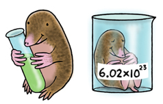

By: Brian Hsieh, dedicated to Mrs. Feuss
Introduction
The
mole is a unit of measurement for amount of substance. It is defined as the amount of any chemical substance that contains as many elementary entities, e.g., atoms, molecules, ions, electrons, or photons, as there are atoms in 12 grams of carbon-12, the isotope of carbon with relative atomic mass 12 by definition. This number is expressed by Avogadro's number, which has a value of 6.02×10^23. In other words, the mole is the name given to an amount of a substance equal in mass (in grams) to the combined mass (in amu) of the atoms of the constituent molecules of the substance multiplied by Avogadro's number. It is one of the base units in the International System of Units; it has the unit symbol mol.
